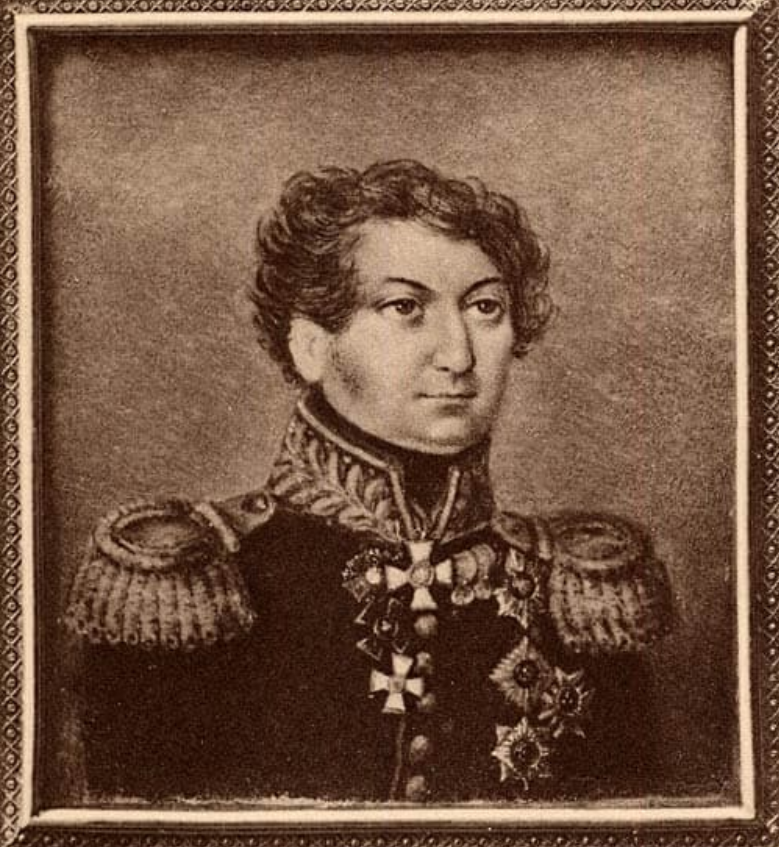
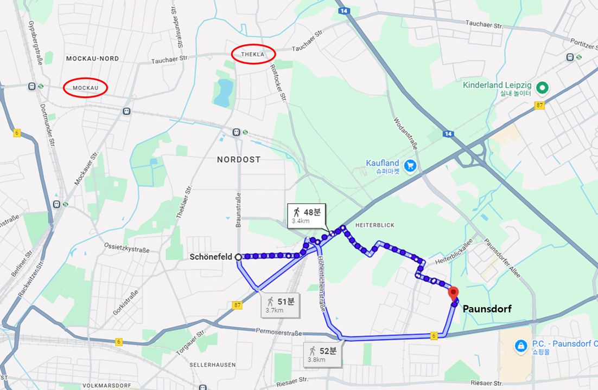
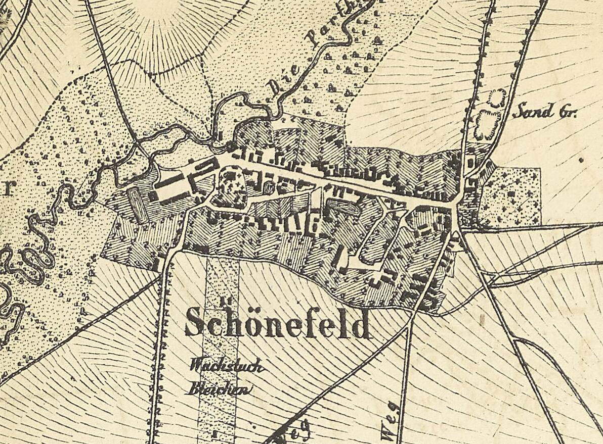
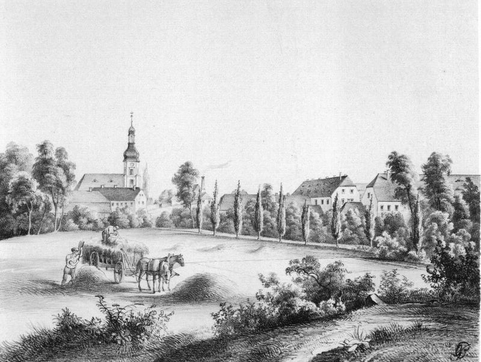
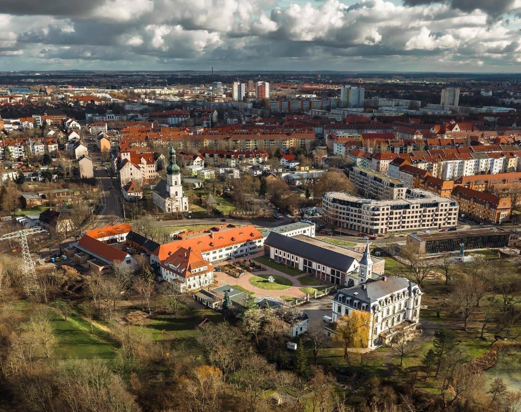
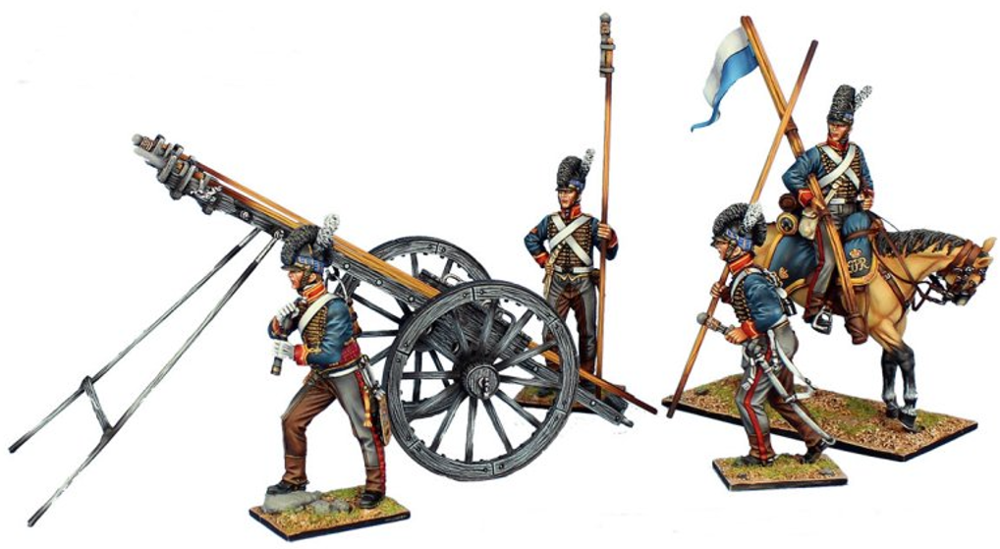

라이프치히 전투 (31) - 거북이인가 여우인가
게시: 2026-01-05T06:30:36+09:00
프랑스 포병대가 테클라 언덕에서 물러나자 러시아군은 환호했습니다. 그런데, 가만히 보니 프랑스 포병대만 물러나는 것이 아니었습니다. 파르터 강변에 버티고 있던 그랑다르메 부대들도 후퇴하고 있었습니다. 그러니까 프랑스 포병대가 러시아군과의 포병 대결에서 졌기 때문에 물러났다기보다는, 무슨 이유에선지 이 즈음해서 그랑다르메 전체가 파르터 강변에서 후퇴하고 있었던 것입니다. 현장의 러시아군 지휘관인 루체비치(Alexandr Rudzevich)도 짐작을 했는지 모르겠으나, 이는 베르나도트의 뛰어난 작전지시 덕분이었습니다. 모카우 근처 파르터 강변에서 도하 준비를 하고 있던 러시아군의 뒤편으로 뷜로의 프로이센군이 저 상류의 타우하(Taucha) 쪽으로 행군하는 모습은 그랑다르메 쪽에서도 잘 보였습니다. 거기서 파르터강 너머의 러시아군과 툭탁거리며 발이 묶여 있다간 타우하에서 도하한 프로이센군에게 퇴로가 차단될 거라는 판단을 내린 마르몽은 전술적 후퇴를 명했습니다. 결국 루체비치가 지휘하는 러시아 보병들은 파르터강의 여울목을 찾아 머스켓과 탄약통을 머리 위로 치켜들고 허리춤까지 차는 강을 비교적 쉽게 건널 수 있었습니다. 아이러니한 부분은 정작 '뷜로가 먼저 강을 건너 그랑다르메의 측면을 위협하기 전까지는 강을 건너지 말고 대기하라'는 명령을 받았던 러시아 군단장 랑쥬롱이 그 명령을 전달하기 위해 현장에 도착한 것이 이미 루체비치가 강을 거의 건넌 직후였다는 점입니다. 덕분에 본의 아니게 베르나도트의 명령을 간접적으로 어기게 된 랑쥬롱은 루체비치가 자신의 명령을 기다리지 않고 도하한 것에 대해 크게 칭찬하는 전투 보고서를 나중에 올렸습니다.

(나폴레옹보다 6세 연하였던 알렉산드르 루체비치는 정통 러시아 귀족이 아니라 원래 크림 반도의 타타르족 출신입니다. 그의 아버지인 야쿠브 이즈마일로비치 루체비치(Yakub Izmailovich Rudzewicz)는 민족의 배신자 노릇을 했는지, 러시아의 크림 반도 정복 과정에서의 공로를 인정받아 예카테리나 2세 여제로부터 국가고문관(State Councilor) 계급을 수여받고 러시아 귀족이 되었습니다. 아버지가 사망한 뒤, 어린 장남 루체비치는 어머니 인솔하에 형제들과 함께 상트페체르부르그로 이주하여 그곳에서 러시아 정교 세례를 받고 파벨 1세를 대부로 모시게 되었습니다. 그는 주로 고향 근처인 캅카스 지방에서 복무하며 산악 주민들과 싸웠는데, 유럽 전선에 투입된 것은 1812년 때 치차고프의 도나우 방면군에 편성되면서부터였습니다. 그는 나중에 군단장까지 올라갔으나, 1829년 자신의 장남 야코프(Yakov)가 바르나(Varna)에서 오스만 투르크와 싸우다 부상을 입고 사망했다는 비보를 접한 뒤 갑작스럽게 사망했습니다. 그에 대한 평가 중에는 키가 크고 잘 생겼으며 용감하기 짝이 없었다고 되어 있는데, 글쎼요, 잘 생긴 줄은 잘 모르겠습니다.)

(루체비치에 대해 제가 잘 생겼는지 여부는 잘 모르겠다고 말한 이유는 그의 다른 초상화는 이렇게 생겼기 때문입니다.) 이렇게 오전 11시경에 주요 장애물이던 파르터강을 잘 건넜으면 기뻐할 일인데도 블뤼허의 분노는 식을 줄 몰랐습니다. 그는 베르나도트가 일부러 느릿느릿 타우하까지 빙 돌아 도강한다고 분통을 터뜨렸고, 이미 공식적으로 자신의 지휘권을 벗어난 랑쥬롱에게도 륄(Rhule) 소령을 보내 '당장 그랑다르메와 교전하라'고 채근했습니다. 그러나 정작 자신도 돔브로브스키의 폴란드 사단의 완강한 저항에 부딪혀 쉽게 전진하지는 못했고, 어느 방향으로 공격하라고 구체적인 주문을 내지도 못했습니다. 그렇게 애타는 블뤼허에 대해 아랑곳하지 않는 베르나도트는 세상에 급할 것이 없었습니다. 랑쥬롱이 파르터강 남쪽 평원을 장악한 뒤인 오후 1시경에야 베르나도트는 랑쥬롱에게 명령서를 보내왔는데, 그 내용은 '뷜로가 파운스도르프에 도착하는 대로, 즉각 쇤너펠트(Schonefeld)를 공격하여 탈환하라'는 것이었습니다.

(랑쥬롱이 모카우에서 테클라로 별 저항 없이 건너온 것이 11시 경인데, 랑쥬롱은 불과 1시간 거리도 안 되는 3km 남쪽의 쇤너펠트를 공격하지 않고 2시간이나 기다렸다는 이야기입니다.) 무조건 빨리빨리만 외쳐대던 블뤼허가 이 천하태평스러운 명령서를 읽었다면 아마 혈압이 위험 수준으로 올랐을 것입니다. 하지만 뷜로가 파운스도르프를 공격할 때를 기다려 랑쥬롱도 쇤너펠트를 공격해야 한다고 지시한 베르나도트의 판단도 나름 합리적이긴 합니다. 쇤너펠트는 라이프치히 북부에 있어서 나폴레옹 방어선의 핵심 역할을 하는 곳으로서, 거의 완벽하게 요새화된 곳이었고 마르몽 본인이 여기를 지키고 있었기 때문이었습니다. 일단 쇤너펠트 북쪽~서쪽 일대는 파르터강과 연결된 습지가 깔려 있어서 군부대의 접근이 매우 곤란한 곳이었습니다. 쇤너펠트 남쪽에는 공동묘지가 있었는데, 당시 독일의 큰 마을에 딸린 공동묘지가 흔히 그렇듯이 여기도 돌벽으로 둘러싸여 있었고, 마르몽은 이 돌벽을 이용해 요새나 다름 없는 방어진지를 꾸며놓았습니다. 쇤너펠트 시가지는 서쪽에서 동쪽으로 이어지는 도로를 중심으로 형성되어 있었는데, 그 도로 양쪽으로 2층짜리 석조 주택들이 즐비하게 늘어서서 수비군에게 최적의 엄폐물을 제공해주고 있었습니다. 마르몽의 수비군은 그런 주택들의 돌벽에 총안을 뚫고 철통 같은 방어태세를 갖추고 있었습니다.

(1863년의 쇤너펠트 지도입니다. 제가 봐도, 대군이 일거에 진입하려면 저 동쪽의 입구를 통해 밀고 들어가는 수밖에 없어 보입니다.)

(쇤너펠트(Schönefeld)는 이름 그대로 아름다운 들판이라는 뜻입니다. 이 그림은 1850년대의 모습입니다. 저 그림에 보이는 교회 건물은 라이프치히 전투 때 완전히 파괴되었다가 곧 바로 다시 짓기 시작하여 1820년에 완성된 것입니다.)

(위 그림에 그려진 저 교회는 지금도 남아 있고 여전히 교회로 쓰이고 있습니다. 쇤너펠트의 지금 사진 속에서 저 네오클래식 양식의 교회 건물을 찾아보십시요.) 랑쥬롱은 일단 마르몽의 수비진을 사전에 부드럽게 만들기 위해 오후 1시부터 쇤너펠트에 대해 대대적인 포격을 가하며 뷜로가 3km 정도 떨어진 파운스도르프에 도착하기를 기다렸습니다. 그러나 베르나도트가 작전을 잘 짜는지 모르겠으나 투지 넘치는 현장 지휘는 잘 못했는지, 혹은 블뤼허의 의심처럼 정말 일부러 느릿느릿 전진했는지, 뷜로의 프로이센군의 선봉 여단 하나만 오후 2시나 되어서야 파운스도르프 앞에 나타났고, 그 여단이 파운스도르프에 대해 공격을 시작한 것은 다시 30분이 지난 2시 30분부터였습니다. 아무튼 뷜로의 선봉이 파운스도르프 앞에 도착했다는 소식을 접하자마자, 랑쥬롱은 쇤너펠트에 대해 대대적인 공격에 나섰습니다. 그러나 결과는 처참했습니다. 접근로가 마땅치 않아 북동쪽으로부터 쇤너펠트를 공격했는데, 기다리고 있던 마르몽은 막강한 포병 화력과 함께 맹렬히 반격하여 러시아군을 도륙했습니다. 이 과정에서 연대 하나가 통째로 몰살되고 200여 명의 생존자는 퇴로가 끊겨 모두 포로가 되기까지 했습니다. 간신히 쇤너펠트에 대한 북동쪽 진입로는 확보할 수 있었지만, 그 진입로에는 마르몽의 대포들과 함께 돌벽에 뚫린 많은 총구멍 속에서 삐져나온 머스켓 총구들이 '언제든 다시 오라'는 듯이 벼르고 있었으므로, 거기로 다시 뛰어드는 것은 1차 공격과 동일한 결과만 낼 것이 뻔해 보였습니다. 이 외통수 상황을 타개해준 것은 뜻밖에도 느릿느릿 움직인다고 많은 이들의 원성을 받던 뷜로였습니다. 뷜로의 프로이센군이 오전부터 파운스도르프를 공격하던 부브나와 합세하여 마침내 파운스도르프를 점령하고 그 곳을 지키던 레이니에의 제7군단을 무질서하게 패퇴시켜버린 것입니다. 이제 레이니에가 남동쪽에서 측면 공격할 지도 모른다는 잠재적 위협에서 벗어나게 된 랑쥬롱은 병력을 우회시켜 쇤너펠트를 북동쪽과 함께 남쪽에서도 공격하도록 병력을 재배치하고 재공격을 준비했습니다. 여기서 잠깐, 뷜로는 어떻게 그렇게 간단히 파운스도르프를 함락시킬 수 있었을까요? 뷜로의 선봉대가 막 도착할 당시, 파운스도르프의 상황은 혼란 그 자체였습니다. 전에 언급했듯이, 당시 여기서는 레이니에의 그랑다르메 제7군단이 부브나의 오스트리아 경보병 사단과 혈투를 벌이고 있었는데, 수적 우위를 가진 레이니에가 부브나를 밀어 붙이고 있었습니다. 특히 레이니에가 뒤뤼트 사단을 우회 투입하면서 부브나는 위기에 처한 상황이었습니다. 이때 현장에 뛰어든 것이 뷜로였습니다만, 실은 당장 도착한 것은 뷜로의 프로이센 제3군단 중 고작 1개 여단뿐이었습니다. 하지만 그 1개 여단에는 4개의 포병 대대와 더불어 프랑스군이 처음 보는 신무기 여단도 포함되어 있었습니다. 바로 영국의 콘그리브(Congreve) 로켓포대였습니다.

(자세한 이야기는 다음 주에...) Source : The Life of Napoleon Bonaparte, by William Milligan Sloane Napoleon and the Struggle for Germany, by Leggiere, Michael V With Napoleon's Guns by Colonel Jean-Nicolas-Auguste Noël https://www.britannica.com/event/Napoleonic-Wars/Dispositions-for-the-autumn-campaign http://www.historyofwar.org/articles/campaign_leipzig.html https://warhistory.org/@msw/article/leipzig-battle-of-the-nations https://www.encyclopedia.com/history/encyclopedias-almanacs-transcripts-and-maps/leipzig-battle-0 https://warfarehistorynetwork.com/article/death-knell-for-napoleons-empire/ https://www.prlib.ru/en/node/358830 https://medalirus.ru/georgievskie-kavalery/rudzevich-aleksandr-jakovlevich.php https://de.wikipedia.org/wiki/Sch%C3%B6nefeld_(Leipzig) https://en.wikipedia.org/wiki/Congreve_rocket https://www.treefrogtreasures.com/p-21764-british-congreve-rocket-system.aspx